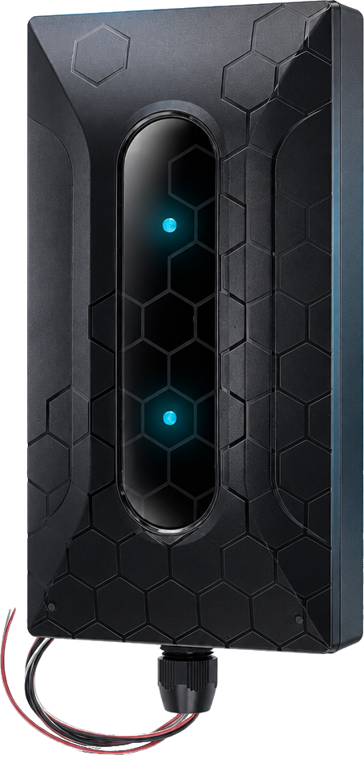
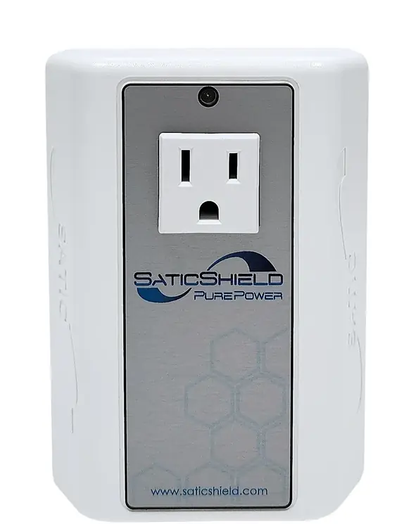
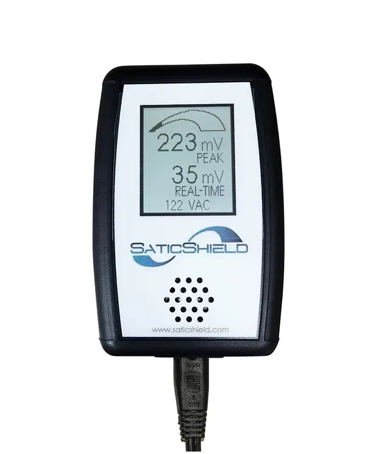
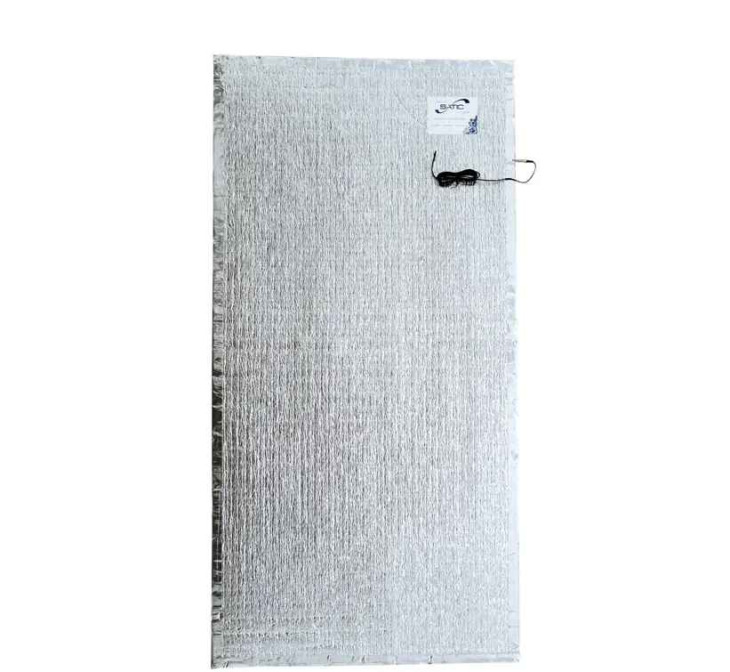
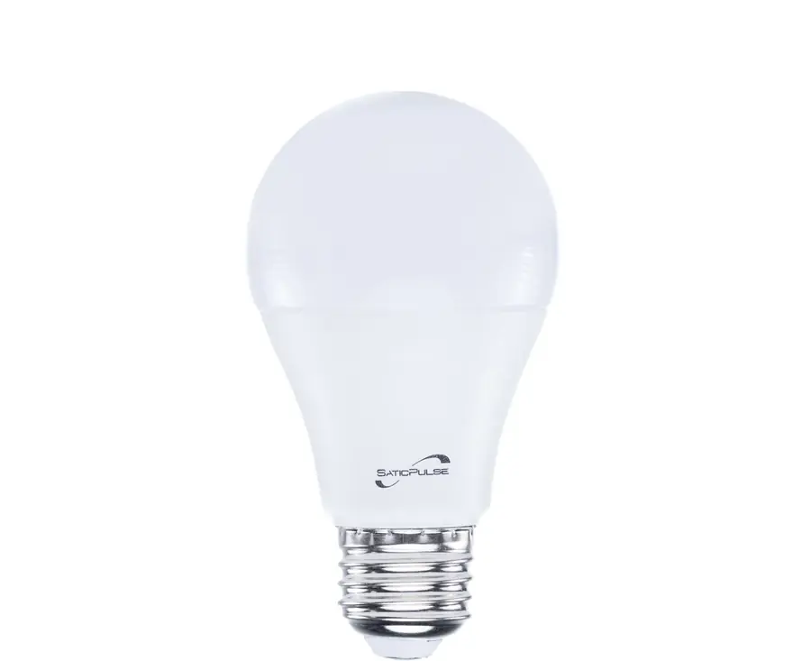

WHOLE-HOME OPTION
SD + free meter
Explore the SD option for whole-home filtration. Review the exact model, electrical compatibility and installation requirements with a specialist.
Ask about the SD bundle ↗You choose what comes into your home. But chargers, LEDs and solar equipment can introduce unwanted electrical noise onto its wiring. Choose an SD or eight plug-in units and get an EMI Line Monitor free, so you can compare readings before and after filtering.

No separate meter purchase. Choose a qualifying filtration option and get an EMI Line Monitor included free.
Explore the SD option for whole-home filtration. Review the exact model, electrical compatibility and installation requirements with a specialist.
Ask about the SD bundle ↗
Choose eight PurePower plug-in units for targeted line-noise filtration. Confirm placement and suitability for your home before ordering.
Ask about the plug-in bundle ↗
Take a baseline reading. Install according to product instructions. Compare readings at the same outlet under similar conditions. Readings are not a medical assessment or a complete measurement of every type of EMF.
Campaign preview: proposed offer is a free EMI Line Monitor with an SD or eight plug-in units. Final eligibility, pricing, availability and fulfillment terms require confirmation before launch. Bundle buttons open a specialist inquiry, not an activated promotional checkout.
Phones, LEDs, smart appliances, solar equipment and countless electronics reshape the electrical environment every day. The result can include unwanted frequencies and interference—often called dirty electricity.
Electrical line noise is unwanted signals on wiring, not audible noise in your room. Appearance alone won’t tell you what is present.
Everyday electronics can introduce harmonics and interference back into your home’s wiring.
Explore filtration designed to address line noise, with a meter included to compare before-and-after readings.

“Create a universal solution—and lead the shift toward a clean-power paradigm.”
PurePower advances engineered clean power for modern homes. Our Montana team brings measurement and filtration together so homeowners can understand their options and make informed choices.
Meet the people behind the mission ↗In 81 seconds, discover why today’s electrical environment calls for a new approach—and the Montana-built technology designed to answer it.
Answer five quick questions to help prepare a conversation about product fit. The free-meter offer applies to an SD or eight plug-in units; this guide does not establish safety or guarantee a product recommendation.
Choose your filtration option and get the meter with it. An SD or eight plug-in units qualifies for a free EMI Line Monitor. Confirm fit and installation requirements before ordering.
Solar can power your home, but solar generation and electrical line-noise filtration are different jobs. Explore the SD whole-home option and get an EMI Line Monitor included free with a qualifying purchase.
Targeted filtration for standard 120V outlets. A purchase of eight units qualifies for a free EMI Line Monitor.
View solution ↗See and hear line interference before and after filtering. Included free with an SD or eight plug-in units; no separate meter purchase needed.
View monitor ↗

High-efficiency LED lighting designed for ultra-low harmonic distortion.
View lighting ↗We love what we do, back our claims, honor our warranties and stand behind the products we’ve made with pride.
THE PUREPOWER TEAM · BIG SKY COUNTRYAn SD or eight plug-in units. Either qualifying option includes an EMI Line Monitor free. Review the bundle and confirm fit with a specialist.